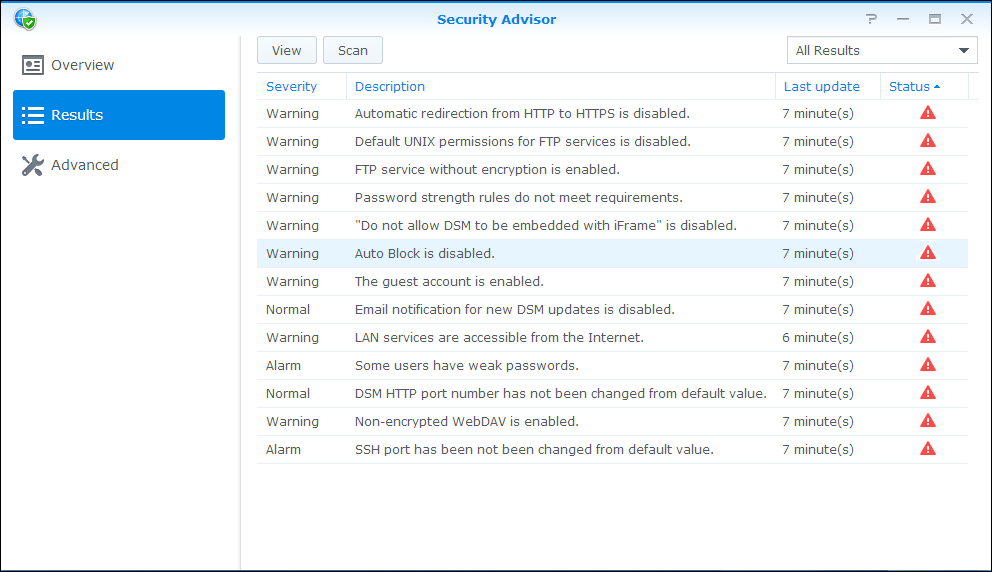

Übersicht
DSM verfügt über eine Funktion mit dem Namen Security Advisor, der Ihnen dabei hilft, das Synology NAS sicher zu halten. Security Advisor scannt die Gesamtkonfiguration des Synology NAS und bietet genaue Berichte über den Sicherheitsstatus. Zusätzlich wird Ihnen Security Advisor zeigen, wie Sie mit erkannten Sicherheitsrisiken umgehen sollten. Öffnen Sie Security Advisor, um die folgenden Dinge zu lernen:
- Einen Sicherheits-Scan durchführen
- Berichte über Sicherheitsregeln anzeigen
- Sicherheitsrisiken verwalten
1. Einen Sicherheits-Scan durchführen
- Wenn Sie Security Advisor das erste Mal öffnen, werden Sie danach gefragt, für was Sie das Synology NAS nutzen. Wählen Sie Privat oder Geschäftlich und klicken Sie auf OK. Sie können diese Einstellung später jederzeit auf der Seite Erweitert ändern.
- Security Advisor wird mit dem Scan Ihrer Synology NAS Konfiguration beginnen. Sie können den Gesamt-Sicherheitsstatus, den Scan-Verlauf und eine Zusammenfassung der Ergebnisse auf der Seite Übersicht anzeigen.
- Nach dem Ende des Scans werden Ergebnisse für jede Kategorie von Sicherheitsregeln angezeigt. Security Advisor wird einen Gesamtstatus für jede Kategorie und eine Zusammenfassung von gefundenen Sicherheitsrisiken anzeigen.


2. Berichte über Sicherheitsregeln anzeigen
- Klicken Sie auf der Seite Übersicht auf Berichte anzeigen. Sie können detaillierte Informationen über den abgeschlossenen Scan auf einer Bericht-nach-Bericht Basis anzeigen.
- Klicken Sie doppelt auf eine Sicherheitsregel, um einen detaillierten Bericht zu öffnen. Jeder Bericht könnte Informationen über die Schwere, Beschreibung, Details und Empfohlene Aktion für jede Sicherheitsregel enthalten.


3. Sicherheitsrisiken verwalten
Werfen wir einen Blick auf ein Beispiel einer fehlgeschlagenen Sicherheitsregel und wie wir damit umgehen sollten.
- Security Advisor wird potentielle Sicherheitsrisiken für jede fehlgeschlagene Sicherheitsregel erkennen. Hier hat Security Advisor entdeckt, dass "Automatische Blockierung deaktiviert ist". 
- Öffnen Sie eine fehlgeschlagene Sicherheitsregel, um detaillierte Informationen anzuzeigen. Unter Empfohlene Aktion zeigt Security Advisor Hinweise zum Umgang mit diesem Sicherheitsrisiko.
- Klicken Sie auf Öffnen, um direkt zur entsprechenden Einstellungsseite zu wechseln und befolgen Sie den Hinweis unter Empfohlene Aktion.
- Auf der Seite Ergebnisse können Sie die fehlgeschlagene Sicherheitsregel erneut scannen, indem Sie die Regel auswählen und auf Scan klicken.
- Für diese Sicherheitsregel wurden keine Sicherheitsrisiken entdeckt. Security Advisor wird Ihnen weiterhin dabei helfen, potentielle Sicherheitsrisiken zu erkennen und Aktionen für den Umgang mit diesen Risiken empfehlen. Halten Sie Ihr Synology NAS durch regelmäßige Scans in Security Advisor sicher!